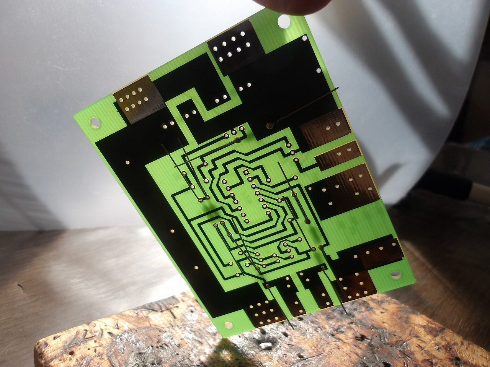
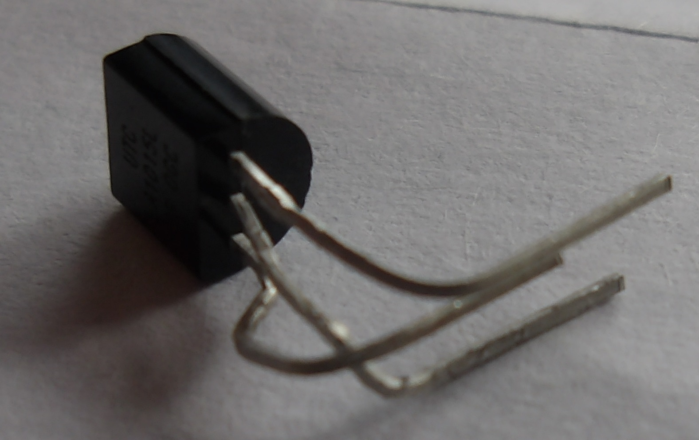
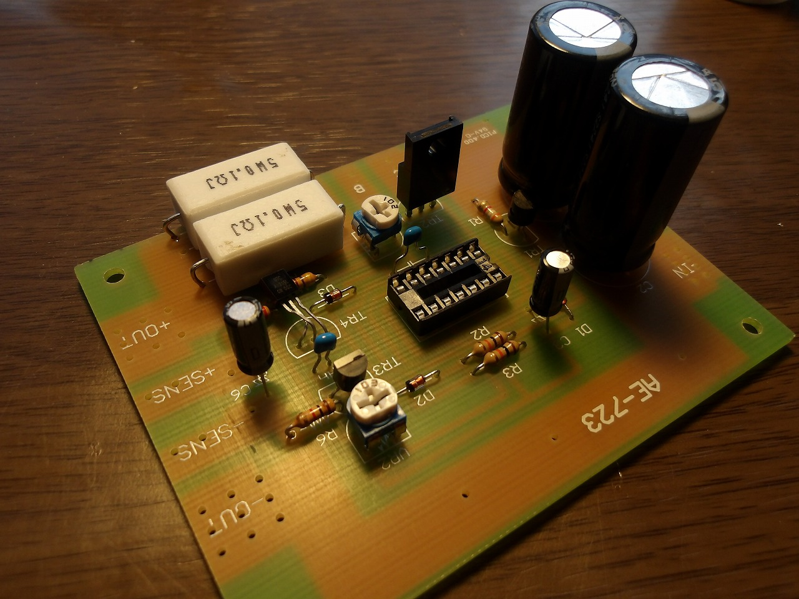

取り合えず先ず、電源キットを組み立てる。

(上図、電源キットの基板)
背の低い部品から順調に取り付けていくのだが、一つ注意点がある。それはこの電源キットには有名な設計ミスがあることだ。
回路図を見ると、なぜかPNPトランジスタであるTr4のエミッタが負極側、コレクタが正極側に繋いであることが分かる。このキット自体約20年前から発売されているので、このミスは回路図上にのみ残っているのではと思うかもしれないが、実際のところ、基板に於いても配線は誤ったままになっている。
更に言うと、秋月電商もこれについて承知しているようである。(
https://akizukidenshi.com/catalog/faq/goodsfaq.aspx?goods=K-00202)
いや、何故そのミスを直さないのかと言うかもしれないが、実はエミッタとコレクタがテレコっていても回路は正常に作動する(らしい)からだと思われる。Tr4の2SA1015はベース-エミッタ間、ベース-コレクタ間が対称に近い形になっているので、エミッタとコレクタを入れ替えても正常に動くという...
取り合えず、今回はエミッタとコレクタを元の正常な配線に直すため、トランジスタ下図のように加工。

これを基板に差し込み、他の部品の組み立てると下の図のようになる。

見ての通り、此れだとTr4の足ががいつ短絡してもおかしくないので、グルーガンか何かで絶縁しつつ固めておこう。(Mastodonで指摘してくれた人に感謝)